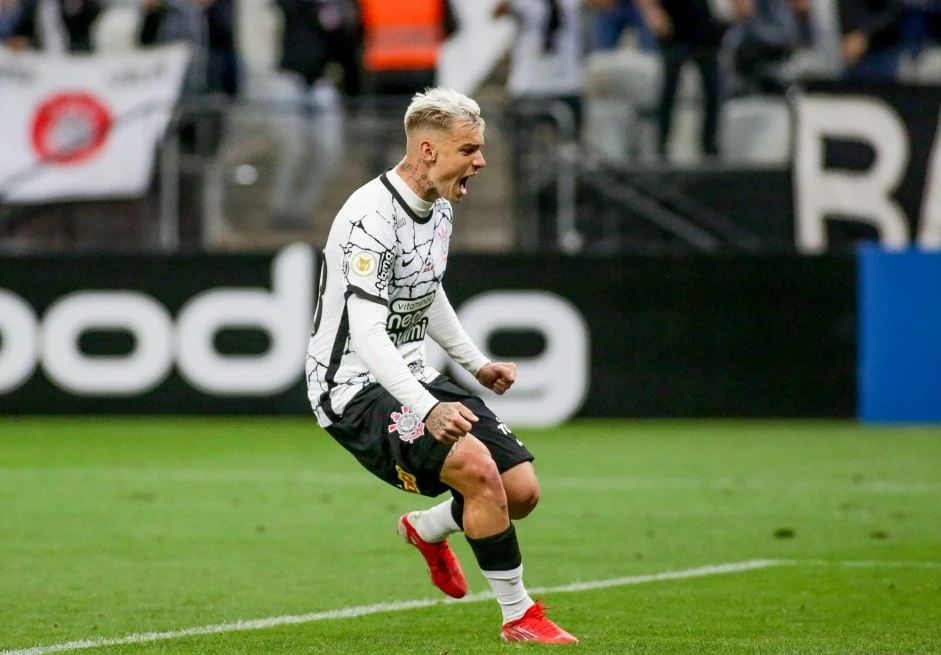

Jornal do Corinthians
Notícias
Jogos
Classificação

CORINTHIANS FECHA 24ª RODADA EM ALTA E FICA DOIS PONTOS ATRÁS DO SEGUNDO LUGAR DO BRASILEIRO
CORINTHIANS TEM MAIOR PÚBLICO E RENDA NA PRIMEIRA SEMANA COM TORCEDORES NOS ESTÁDIOS DO BRASILEIRÃO
CORINTHIANS TEM MAIOR PÚBLICO E RENDA NA PRIMEIRA SEMANA COM TORCEDORES NOS ESTÁDIOS DO BRASILEIRÃO